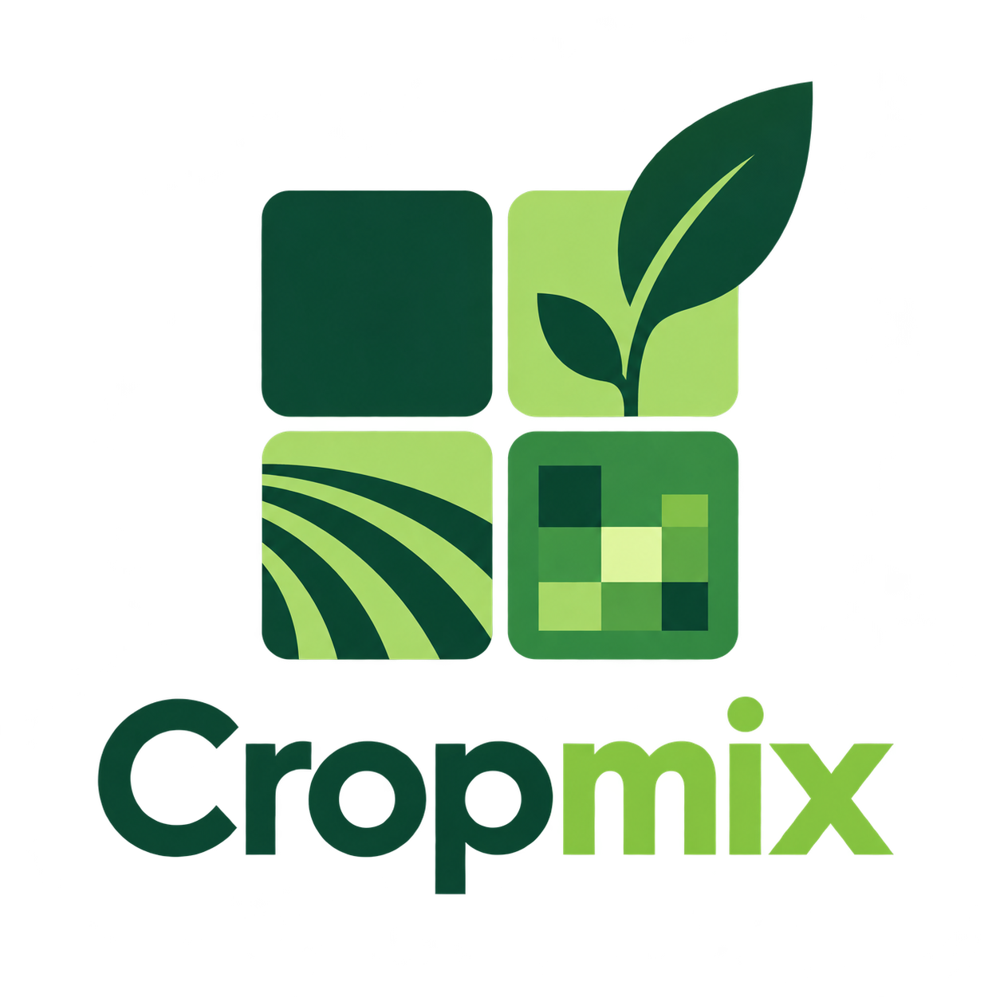

Cropmix
Spatial simulation and optimisation of crop varietal mixtures under vector-borne disease pressure.
Cropmix provides a structured Python API for representing planting geometry, cultivar allocation, host traits, vector and pathogen parameters, epidemic introductions, stochastic simulation and spatial design analysis.

What is Cropmix?#
Cropmix is scientific software for studying how crop varietal composition and spatial arrangement interact with vector-borne disease dynamics. A workflow is assembled from explicit model objects rather than a single monolithic function: a Field defines planting coordinates, a MixtureDesign assigns varieties, a CropMixSystem defines biology and movement, and a Scenario defines the epidemic conditions. The same objects are reused for simulation, deterministic comparison and design optimisation.
Model fields and mixtures#
Create rectangular grids, masks, polygon-clipped lattices or arbitrary coordinate sets. Assign exact variety counts or import an existing design.
Fields & planting designs →Simulate epidemics#
Run finite stochastic continuous-time Markov chains with explicit plant states, vector infection status and non-local distance-weighted movement.
Stochastic simulation →Analyse spatial design#
Summarise stochastic outcomes, compute spatial descriptors, compare spatial and mean-field dynamics, and search fixed-composition designs.
Analysis workflows →Start here#
Getting started#
Install Cropmix and run a complete example from field construction to a SimulationResult.
User guide#
Detailed explanations of geometry, biology, scenarios, movement, simulation, uncertainty, mean-field models, metrics and optimisation.
Open the user guide →API reference#
Signatures, properties and methods for the package root, submodules, optional EpiPvr bridge and regular-grid backend.
Browse the API →Examples#
Self-contained scripts for common workflows, including irregular fields, multi-variety mixtures, vector introductions and uncertainty analysis.
Run the examples →Core workflow#
planting coordinates
variety at each site
host + vector + pathogen + kernel
duration + introductions
trajectories + endpoints + maps
Installation#
python -m pip install cropmixUntil a PyPI release is available, install the wheel distributed with the project or install from a local clone. See Getting started.
Scientific scope#
The current spatial simulator implements semi-persistent transmission (SPT) with explicit plant latency and virus-bearing vectors. Parameter inference through the optional EpiPvr bridge can represent both SPT and persistent-transmission experiments; persistent-transmission spatial dynamics require an additional exposed-vector compartment and are therefore not simulated by the current engine. See Model boundaries for the complete scope.